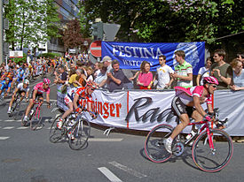

LAS PRUEBAS
El ciclismo en ruta propone cuatro tipos de prueba: las clásicas, las carreras por etapas, las pruebas contrarreloj individual y las contrarreloj por equipos; aunque frecuentemente a las contrarreloj se les ha omitido el calificativo de "ruta" para diferenciarlas de la mayoría de pruebas que se corren en pelotones, es decir, todos los corredores juntos.
las clásicas
Las pruebas que se desarrollan en un solo día son llamadas a menudo clásicas y forman parte de las carreras en línea.
las carreras por etapas
Las carreras que se disputan a lo largo de varios días, y que cuentan con varias partes, son carreras por etapas
las pruebas contrarreloj individual
A diferencia de lo que ocurre en las carreras en línea, clásicas o por etapas, las pruebas contrarreloj se disputan en solitario, con salidas separadas de minuto en minuto en las distancias más cortas (menos de 30 km) o de dos en dos e incluso de tres en tres minutos para distancias superiores.
las contrarreloj por equipos
Cada equipo corre agrupado, con salidas separadas por un tiempo determinado. El tiempo que se cuenta es el del cuarto o quinto corredor que cruza la meta.